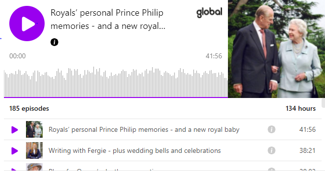

Meghan and Harry must visit Queen with Lilibet for 'family unity', says royal author
A royal writer said that the Queen 'is getting older' and it was 'imperative for family unity' that the family came over to the UK for a visit, possibly in early December
ByWilliam WalkerNews Reporter 00:28, 22 Sep 2021 >
Prince Harry and Meghan should visit the Queen with their new baby Lilibet as the US travel ban is no longer an 'excuse' a royal insider has claimed.
A royal writer said that the Queen 'is getting older' and it was 'imperative for family unity' that the family came over.
People who are fully vaccinated against Covid have been given the green light to travel to the US within weeks after President Joe Biden said he would lift the coronavirus travel ban.
The White House announced that vaccinated passengers from the European Union and the UK will be able to enter the country from November.
It marks the end of an 18-month blanket ban imposed by Donald Trump at the height of the Covid pandemic that has kept tourists, business people and separated families out.
In an interview with The Sun writer Adam Helliker said the brood returning to Harry's home country was "imperative for family unity."
He said: "I think Harry will feel particularly guilty if [the Queen] doesn't see the great-grandchildren she's not seen much of - or the great-granddaughter she's not seen at all.
"I think if they're going to try to patch things up - and we all hope they will work to increase what remains of the unity between them and the family - then I think it's paramount that they start planning a trip for maybe early December.

Refinance gold
Richard Gere´s son is probably the most handsome man to ever existSwift veredict
Jennifer Grey is probably the most beautiful 61 year old woman Sponsored links by Taboola"I doubt obviously they want to be restricted by spending any Christmases at Sandringham, but maybe a mid-December pre-Christmas trip to say hello to the family."
He added that the family ties 'were really important' for Harry.
It comes after it was reported that Prince Harry and Meghan Markle were desperate to see the Queen in order to maintain their "saleability in the United States."
Reports have suggested that the Sussexes could be keen to visit the UK so their three-month-old daughter Lilibet could be christened in Britain like her older brother Archie.
Baby Lilibet has also never met the Queen after being born in California in June 2021, while Archie has been unable to see his great-grandmother since the family's move to the US at the beginning of 2020.
